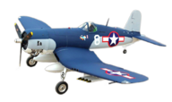
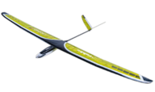
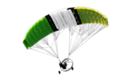
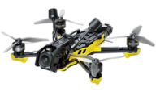
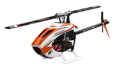
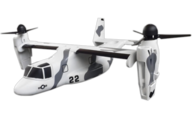

Detta är modellflyg
Modellflyg är en bred, kreativ och inkluderande hobby där du bygger, flyger och utvecklar allt från små drönare och segelflygare till avancerade skalamodeller och tävlingsmaskiner. Du lär dig grunderna i aerodynamik, elektronik, mekanik och radioteknik – ofta utan att ens tänka på det, eftersom det mest känns som lek och nyfikenhet.
Samtidigt tränar du koncentration, problemlösning och fingertoppskänsla. Minst lika viktigt är gemenskapen: modellflyg bedrivs ofta tillsammans med andra, där kunskap delas generöst och där kamratskapet är en central del av hobbyn. I klubbar och på fält möts människor i alla åldrar och med olika förutsättningar, på samma villkor och med ett gemensamt intresse som grund.
Modellflyg passar alla – oavsett bakgrund, ålder eller tidigare erfarenhet. Det finns gott om exempel som visar att viljan och gemenskapen är viktigare än begränsningar. Oavsett om du vill flyga avslappnat på ett fält, bygga egna konstruktioner, tävla eller bara njuta av tekniken, erbjuder modellflyg både utmaningar, glädje och en stark känsla av frihet. Det är en hobby där du ständigt lär dig nytt, utvecklas och samtidigt har riktigt roligt – tillsammans med andra.
En kort presentation av en bred hobby
Modellflyg är allt från lugnt och stabilt till snabbt och avancerat – och alla hittar något som passar. Det är en hobby som kombinerar teknik, naturupplevelser, kreativitet och gemenskap.Flygplan (Fixed Wing)
Modeller med fasta vingar som liknar vanliga flygplan – allt från träningsplan till snabba jetliknande modeller.
- Träningsplan (t.ex. high wing)
- Sport- och skala-modeller
- Warbirds
- EDF-jet (Electric Ducted Fan)
- Turbinjet
- Pylonracing
- Inomhus (profilplan, shockflyers)
Segelflyg (Gliders)
Lätta, effektiva flyg som använder vind och termik för att hålla sig i luften – ibland i över en timme utan motor.
- Termikseglare
- F3K handkastade seglare
- F5J elektriska seglare
- Storseglare
- Hangseglare
Paramotor & Paraglider
Modeller med dukvinge som glider lugnt och stabilt – ofta med en ”pilotfigur” och mycket avslappnad flygstil.
- Fallskärmshoppare
- Scale paramotor
- RC-paragliders med "pilotfigur"
- Vinsch- eller handstartade glidare med dukvinge
Multirotor / Quadcopter
Drönare med flera motorer som hovrar stabilt och är enkla att flyga – allt från lugna kameradrönare till snabba FPV-racers.
- Hobby-quadcopters
- FPV-racing
- Cinewhoops
- Freestyle-quads
- Microquads (1S–2S)
- Kameradrönare (t.ex. DJI, Autel)
Helikoptrar
Modeller med roterande rotorblad som kan hovra, flyga precisionsmanövrar eller avancerad 3D-akrobatik.
- Trainer-helis
- 3D-helikoptrar
- Skalahelikoptrar
- Micro-heli (indoor)
VTOL & Hybridmodeller
Flyg som kan starta som en drönare (rakt upp) och sedan flyga framåt som ett flygplan – kombinerar två världar.
- Tricopters
- Tilt-rotor
- Flyg/quad-hybrider
Ej RC styrda

Modeller som inte styrs från en radiosändare
- Linflyg
- Friflyg
- Gummibandsflygplan
- Raketer
Övriga

Udda och roliga modeller som
- Ornithopters (flaxande fågelplan)
- Autogyros – gyrokopterliknande modeller
- Luftskepp/Blimp
- Jet assist (raket + flyg)
Gillar du ikonerna och vill ha sådana i din sändare Skyraccoon (Öppnas i ett nytt fönster)